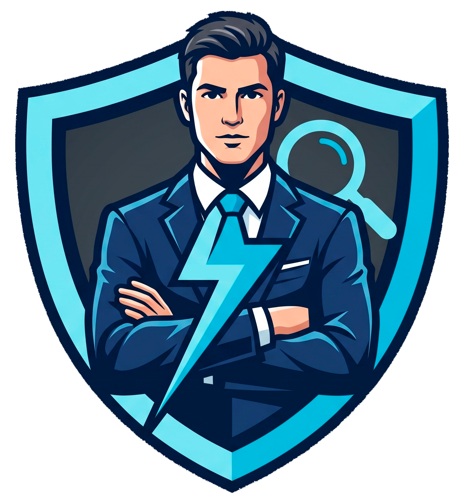

Espacio centralizado de recursos, documentación y despliegue de entornos prácticos para el seguimiento de la asignatura.
Descripción del escenario de compromiso, alcance de la auditoría y objetivos de la investigación forense.
Acceso a las imágenes de memoria, triages del sistema y capturas de tráfico de red asignadas.
Acceso al entorno de competición donde se validarán los flags de los ejercicios de análisis forense y respuesta.
Consulta el estado del marcador en tiempo real y las normas específicas para la resolución de los retos.
Enlaces a repositorios oficiales y software necesario para las tareas de análisis forense y triage.
Hojas de referencia rápidos, metodologías estándar (NIST/ISO) y modelos para la elaboración de informes.